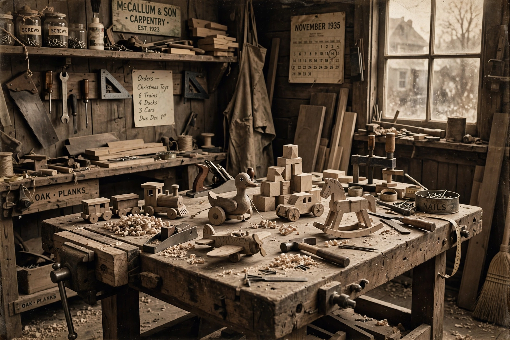

| Born | 7 April 1891, Filskov, Denmark |
|---|---|
| Died | 11 March 1958 (aged 66), Billund, Denmark |
| Occupation | Carpenter, toy manufacturer |
| Known for | Founding The Lego Group |
| Children | Godtfred Kirk Christiansen, Karl Georg Kirk Christiansen, Gerhardt Kirk Christiansen, Johannes Kirk Christiansen |
Ole Kirk Christiansen (born Ole Kirk Kristiansen; 7 April 1891 – 11 March 1958) was a Danish carpenter and the founder of the Danish toy company Lego, known for the interlocking plastic bricks that bear the company's name.
Christiansen was born in Filskov, Denmark, into a poor family of ten children. Trained as a carpenter, he bought a woodworking shop in Billund in 1916 and worked building houses, furniture and farm implements, assisted by apprentices including his son Godtfred.
During the Great Depression, demand for carpentry collapsed, and in 1932 Christiansen began producing wooden toys such as yo-yos, pull-along animals and piggy banks. In 1934 he named the company "Lego", from the Danish leg godt ("play well"). A factory fire in 1942 forced a rebuild, after which the company increasingly invested in plastic: in 1947 it bought a plastic injection-moulding machine, and in 1949 it launched "Automatic Binding Bricks", forerunners of the modern brick.
Christiansen died of a heart attack in 1958, the same year his son Godtfred patented the modern Lego brick design with inner tubes. The company his workshop became grew into the world's most valuable toy brand, and the family's holding company Kirkbi still controls it.